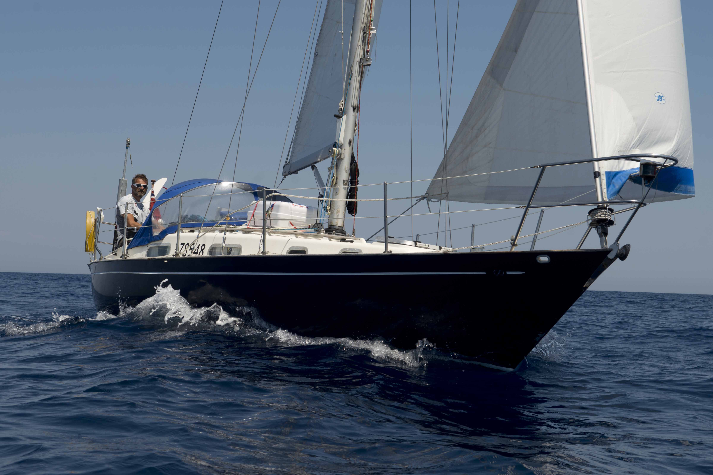
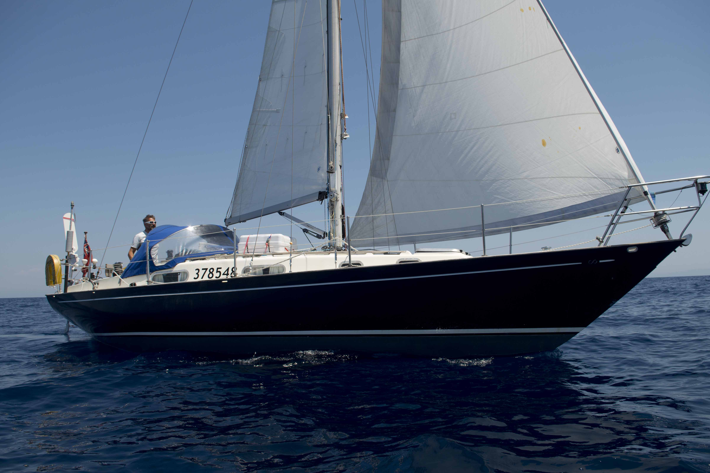
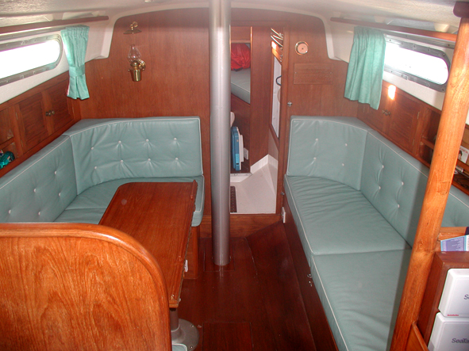

Vagabond Contessa for Sale
Ready for Solo Ocean Sailing
Contessa
32
built by Jeremy Rogers 1978
Vagabond Contessa CO613 - Dark Blue Hull - White topsides

Vagabond Contessa sailing beautifully in light winds in
Sardinia


Layout
The
layout of the boat is as the original design with twin/double
berth in the forepeak (with infill cushion), to the stern of
which is the head (Lavac WC and wash hand basin with manual
pump from the cabin sole water tank) to port, and hanging
locker to st'bd. This is separated from the main saloon by a
teak louvered sliding door. The saloon is of a 'U' shaped
seat, which converts into a double bunk when used with the
very substantial, large, folding table; opposite which is a
long bunk. To the stern of the saloon is the galley (port) and
chart table (st'bd). To the stern of the chart table running
under the cockpit is a cavernous quarter berth. In total six
berths. There are lockers beneath all the bunks. In addition
there are lockers in the saloon sides, both above and behind
the seat backs, lockers to the back of the galley and chart
table.
All upholstery in pale
blue Majilite
(a luxury leather look hard-wearing waterproof but breathable
material) together with new foam. - new
2003. Lee cloths new
2007
Heating is by an Eberspacher air
heater with one outlet to the
saloon. - serviced
2004
Galley
Spinflo Nelson two burner grill, oven and grill; all
with flame failure - new
2004. At the same time a stainless crash bar
was fitted and a cook's retaining strap.
All gas fittings
replaced 2005 including
gas locker drain.
Frigomatic refrigerator ( about 70 liters) with
selectable automatic switching, such that when the engine is
turned off so is the fridge. This has not proved necessary
since the power drain is very low, and ice is made within two
hours.- new 2005
There
are lockers to the back of the cooker, including a deep pan
locker, a very large food bin to the side of the sink and
cupboards beneath the sink and the chart table. There are two
drawers above the chart table cupboard.
90 liter water
tank under saloon sole and electric pump.
120
literPlastimo flexible tank under f'wd bunks fed by a
new Whale electric pump -
2008. There is a backup manual pump
installed.
Mechanics
Yanmar 2GM20 engine -
1986. The engine has been regularly serviced
and has always proved reliable with ample power. Diesel pipes
and filters - new 2004
Stainless prop shaft, three bladed Darglow Feathering
propeller - new 2005.
Stainless 50 liter fuel tank .
Electrical
One engine starter battery with
isolator new 2005.
Battery bank of two Vetus 70 amp hr
batteries new 2000
charging via diode and TWC (Adverc) controller, and '1, Both,
2', distribution switch. The charging system is
as recommenced
by ADVERC (formally TWC), which ensures optimum charging
with no chance of disconnecting the alternator. There is an
'always on' isolator (for auto bilge pump).
Rewired 2004
complete with comprehensive wiring diagrams.
Battery charging wiring diagram.
Twelve volt distribution
wiring diagram.
Mains charging/distribution system by Techsup with advanced automatic
battery charging and RCD feeding six 13amp sockets permanently wired and
protected by a Galvanic Isolator. When connected to shore power via the
30m arctic cable the batteries are automatically charged and 12 volts
supplied to the boat independent of the batteries.
Anodes and fixings replaced and rewired 2006.
Sails and Rigging
The mast and boom are by Kemp. Mainsail with three slab reefs
and Barton lazy jacks. The lower two have leech reefing lines
leading back to the cockpit.
Furling Genoa with new UV
strip 2004. Forestay
and Facnor Roller reefing - new
2004
No 4 jib virtually unused which is
rigged on the inner forestay attached by Seasure and
Wichard fittings - new
2004
Storm jib. Little used!!
Spinnaker, with pole and jockey pole (never been used by
me).
The topping lift, spare foresail halyard, spinnaker
halyard, downhaul, uphaul, kicker, and leach reefing lines all
lead aft via mast/ deck organiser to jammers on the coachroof
before the winches.
Other sails not normally carried on
the boat are Spare Main, No 1 Genoa, No 2 Genoa, No 3 Genoa,
Jib. The backstay is tensioned by the traditional Seasure
wheel adjuster (fully serviced). All the standing and running
rigging was new
2000.
Winches
Two Harken ST46 primary self tailing sheet
winches. new 2010
Two Harken ST24new
2010
spinnaker winches
Two Harken ST24
halyard winches mounted on coachroof.
Lewmar Main halyard winch on mast.
Anchor winch by Simpson & Lawrence -manual with capstan and
gypsy -new 2004 . Four winch handles
Navigation/Instrumentation
A completely integrated Autohelm/Raymarine system
communicating via the SeaTalk bus. Consisting - Raymarine
C80 display with current software. This can be fitted
either to chart table or in the cockpit. This is equipped with
the Navionics Gold Chart of the whole of the UK,
Ireland and N of France. - new
2005
The Radar Scanner is
mounted on bespoke stainless mast on transom. The Gyro compass
and rapid heading sensor enable MARPAS radar tracking -
all new 2005.
The SeaTalk /NMEA interface passes the boat's GPS position to the
NASA SX35 DSC radio.
There are two Autohelm
tiller pilots (ST2000 and ST2000 plus) which are fully
integrated into the C80 display and enable the boat to be
steered to a course, a waypoint, or to the wind. In addition
there is a remote control which enables the boat to be steered
from outside of the cockpit. Cockpit displays are Depth,
Log, GPS and Wind, with GPS and Multi
display on the chart table together with
the Autohelm
Yeoman type chart plotter. There are two GPS
aerials (one in commission, one spare).
There is
comprehensive documentation for all instrumentation together
with the Instrument wiring
diagram. There are in fact four GPS systems which can
work independently or together.
All wiring has been
checked and is in accordance with Raymarine instructions An
additional bespoke switch panel has been installed. Much of
the boat was rewired in
2004. What was not rewired was thoroughly
checked and tidied up.
The two Plastimo steering
compass were new 2003
Radar reflector, Windex and VHF aerial,
Tricolour,
steaming, bow and stern and a deck light are
fitted.



Saloon

Galley: Fridge to left, sink
to right, showing two water pump switches

Chart Table: Instrument repeaters
to left, Raymarine C80 plotter/radar and Yeoman (type) plotter.
New 'Vagabond' switch panel to right
More
Pictures
Self-steering: Windpilot
An extremely effective and robust
self-steering Windpilot
has been installed in 2010. It allows a short handed
sailing in almost all conditions and is of great utility
even when sailing with enough crew. Eating lunch while
Windpilot is perfectly steering the boat is a very pleasent
experience.
General There are
comprehensive spares on board including drive belts, anodes,
alternator (ready converted for TWC/Adverc use), gear shift
lever, spare propeller and a new engine water pump. There are
manuals and instructions for most of the equipment on
board. Vagabond is registered on the Jersey Ships Register
under the number: 378548.
15kg Bruce anchor with 50m chain and 50m warp in self draining anchor
locker. 12kg Danforth spare anchor (re- galvanised 2008)
Two Gas cylinder in self-draining cockpit locker.
Large cockpit lockers port, and stern.
Manual bilge pump in cockpit. Automatic whale electric bilge pump in bilge
together with emergency flooding whale float switch - new
2007
Seven fenders, many various warps (two in excess of 40m). Boat hook, Boarding
ladder, webbing mast ladder
Self draining cockpit. new pipework cockpit outlets
2006.
Cockpit grating in teak. Teak cockpit trim and seating - new
1999
Spinlock tiller extension new 2006
Spray hood - new 2004. Spare winter
Spray hood.
Stainless guard rails with pelican hook entry to starboard, Webbing jackstays
- new 2004. Two lifebelts, two throwing
lines and Dan buoy with light.
Bombard a three man dinghy and electric inflation pump with
Yamaha 4 HP outboard. Pushpit outboard bracket.
It is with great regret that I come to have to sell this boat which has been a major part of our lives for over ten years, but the plans I had to sail to faraway places are for personal reasons no longer viable.
My yearly contract in the marina of Santa Teresa di Gallura expires next July and is available for a take over. It's a wonderful spot for exploring the Archipelago di Maddalena and sail trips to places on Costa Smeralda or Corsica.
Vagabond Contessa
is currently in the port of Santa Teresa di Gallura,
Sardinia, Italy ready to be launched and sailed
away.
For sale €39,500
For further information or to arrange a viewing please contact
Rafal Kowalski,
Via in Basso 24, CH-6821 Rovio, Switzerland
+41 79 3955395
rafal.kowalski@mac.com